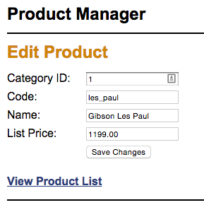

Chapter 4 Enhancement
Purpose
Each enhancement provides an opportunity to solve problems and apply the concepts covered in the current and previous week's topics.
Assumptions
This enhancement requires that you start where exercise 4-1 ended. It is anticipated that you will have completed the exercise on your own so that you are familiar with the application and how it operates. You can begin the enhancement by using the exercise solution code provided by the publisher, but using your own working code is encouraged.
Make a Copy
Prior to beginning the enhancement, make a copy of the finished exercise folder and paste it to a homework area in your site. Rename the pasted folder to represent the enhancement. Do all work on the enhancement in this location. Do NOT overwrite your chapter exercise doing the enhancement. Keep them separate.
Reminder
- Replace all references to the publishers database connection file with your own database connection file.
Tasks
The Ch. 4 enhancement requires you to further enhance the Product Manager application by adding two additional features:
- Add another column to the Product List table in the index page that contains Edit buttons for each item in the list similar to the illustration below:

-
These buttons should link to an Edit Product page that works similarly to the Add Product page, but this page should show the data for the selected product and allow the data to be updated, then have an Update Product button below the text boxes. See an illustration of the Edit Product page below:
 - When this button is clicked, the product information should be updated using an update products page (similar to the add_product page). Make sure that the productID is not editable in the update products page.
- To keep things simple, display the category ID in a text box in the update products page. For extra usability to benefit the site visitor, use a drop-down list to display the correct category name for the product that’s being edited.
Submission
- Build and test your code in the local development environment.
- Check your work to insure that it is operating correctly.
- When satisfied that the code is operational, upload the enhancement folder to the remote production server.
- Create a link from your exercises page to the index page in the enhancement folder and test that it works.
- Fully test the enhancement application for operation on the production server. Correct any errors that are found.
- When done, you should zip your enhancement folder and submit the zip file to the code submission dropbox in this week's module.
Grading Matrix
- Index View: New table column containing Edit buttons is present: 2 points in objective 1
- Edit view: When button is clicked, new edit product view is presented with data for the item that is editable: 3 points in objective 2
- Edit view: Contains PHP and SQL code to retrieve data for the item to be edited: 7 points in objective 4
- Edit view: Change a value for the item. Submit the change. New value appears in the product list: 3 points in objective 2
- Update controller: This page contains the PHP code to process the update to the database, including:
- Filter incoming data: 3 points in objective 2
- Validate inputs: 3 points in objective 2
- Handle errors: 1 point in objective 2
- Update the database using prepared statement: 5 points in objective 2
- Return the view where the update can be seen: 1 point in objective 2
- Enhancement values:
- Objective 1: 2 points
- Objective 2: 19 points
- Objective 4: 7 points